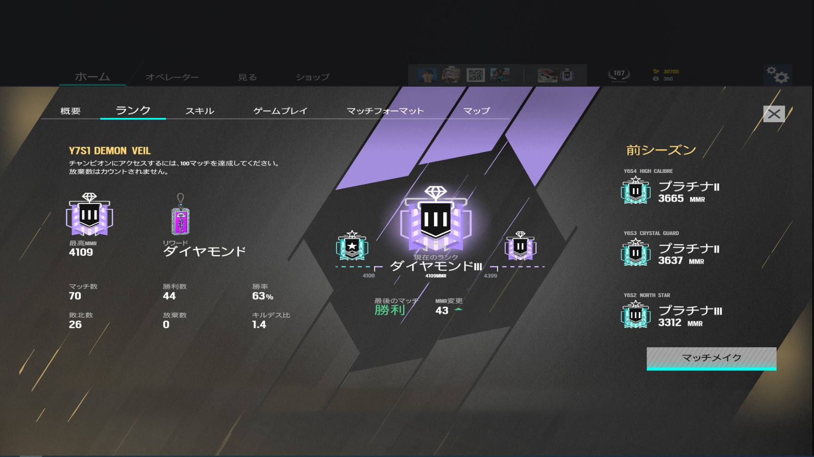
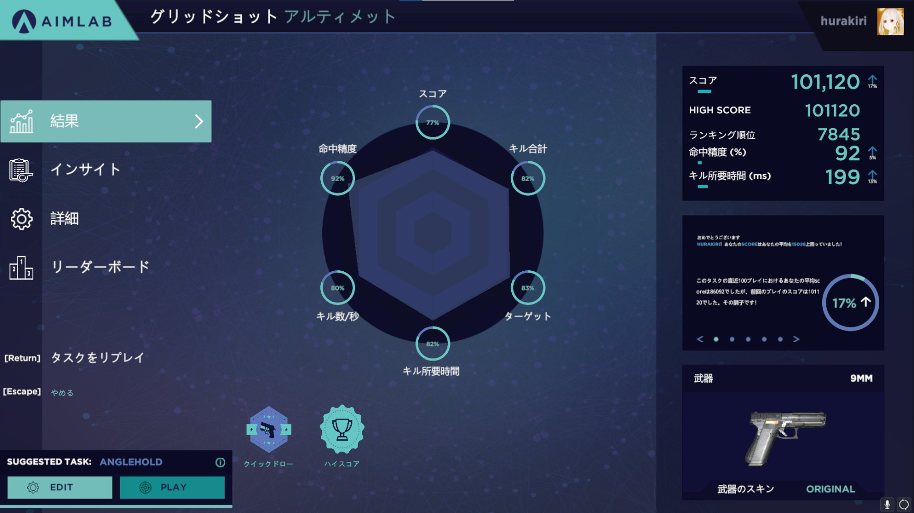

記者の情報
FPS歴7年
RaibowSix Ranked-Diamond
AimLab Score100k-over
My HighLight
RainbowSixHighLight
— huwakira (@1ce_Aim) September 16, 2022
RT、いいねお願いします！！！！！！ pic.twitter.com/9Wu1zS2ADs
2015/X BattleField4 初プレイ
2017/5 RainbowSiX 初プレイ
2022/5 RainbowSix Diamond
2022/6 AimLab 10万点達成